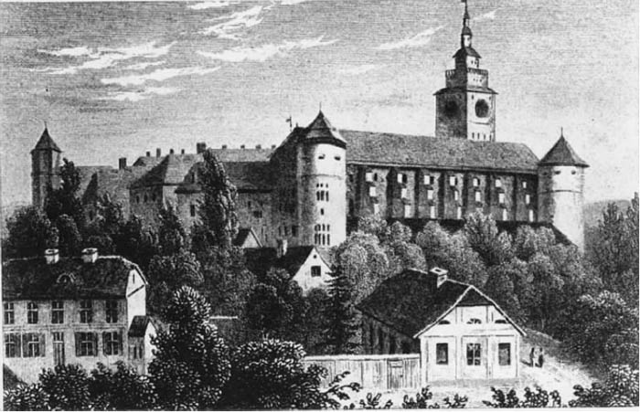
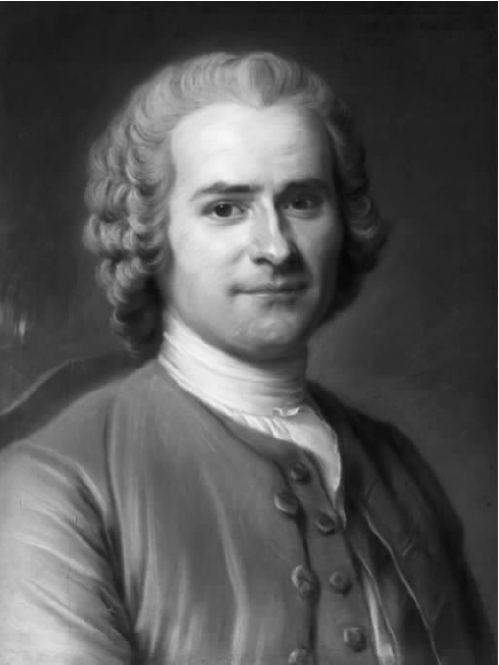
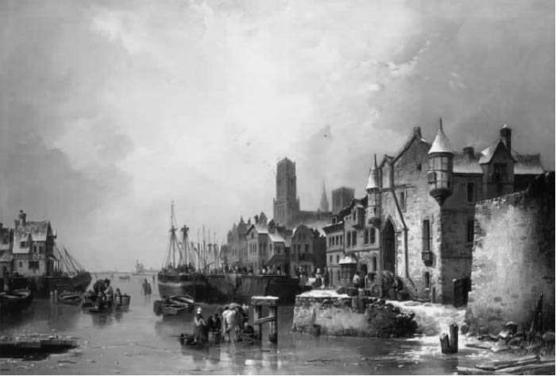
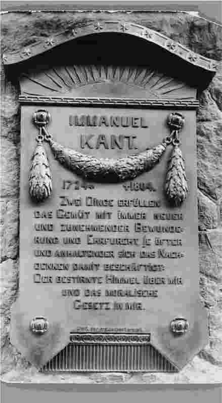

这位现代最伟大的哲学家只被义务所驱动，他的生活也因此平淡无奇。在康德看来，道德高尚的人都是情感的主人，也就鲜为情感所驱使。他们对权力和声名非常淡泊，认为如果把它们同责任放在一起比较就显得微不足道。康德就这样约束着自己的生活，按照这种理想行动他就没有了矛盾。于是，他投入到学术研究中去，完全遵循协调的固定程序。柯尼斯堡的这位小个子教授因此成为了一名现代哲学家：囚禁在果壳里面，把自己视为统辖无限空间的国王。
伊曼纽尔·康德1724年出生于柯尼斯堡，家里以制作马轭勉强维持生计，他在九个兄弟姐妹中排行第四。康德的父母是质朴虔诚的虔诚派教徒。在当时，虔诚主义作为路德教派的改革运动在德国的中下层阶级中有着举足轻重的影响。它所主张的工作、责任和祷告的神圣性缓解了生活的艰辛；它把良知视做至高无上，这一点对康德后来的道德思维将会发生持久影响。这个教派尽管在某些方面有些反智色彩，但它却是推动17世纪晚期德国教育普及的主要力量，并且在柯尼斯堡这个地方就建立了一所虔诚主义教派的学校。八岁的时候，由于天分受到一位智慧善良的牧师的赏识，康德被送进了这所学校。出身于康德这样卑微家族的后人能有这样的教育机会，这是一件幸运的事；但对于年幼的康德来说，这却未必算得上幸运。他对导师们的感激混杂着对他们令人压抑的狂热宗教情绪的反感，以至于他在晚年不愿意提起这段早期教育。关于他这个时期所受教育的特点，我们可以从康德关于教育的一篇短文的引述中判断出来，这篇文章是从康德晚年的讲课笔记中辑纂而来的。
语文学家达维德·鲁思肯是康德的旧时校友，两人成名后，鲁思肯在一封写给康德的信中说：“你我二人曾一起抱怨狂热教徒们充满学究气的、令人压抑的纪律让人受不了，尽管这种纪律并非完全没有价值。现在这些已经过去三十年了。”不可否认，康德在完成这一阶段的教育时情绪低迷沉重，但同时也培养出了相当自律的品格。他在刚成年阶段，有一部分的精力就用于用后者来克服前者。在此方面他通常非常成功。尽管家境穷困，身材瘦小得有些变形，敬爱的父亲和热爱的母亲又都去世了，康德却很快成为了柯尼斯堡最受欢迎的居民，他的儒雅、机智和滔滔不绝的口才使他无论走到哪里都受到欢迎。
康德十六岁的时候进了他的原籍城市的那所大学，六年后毕业。他没有能够谋得学术教职，于是挨家挨户做私人教师。直到三十一岁的时候他才在柯尼斯堡大学获得一个职位，当私人讲师。这个职位不发薪水，只是提供讲授公开课的权利，外加提供做私人指导获得一些微薄报酬的机会。这时，康德已经出版了动力学和数学方面的专著。他还利用做私人导师建立的关系在社会上轻松地获得了“大师”（der schöne Magister）的称号。

图1 柯尼斯堡城堡，康德的房子在其左下方
柯尼斯堡在当时是一座萦绕着尊贵气质的城市，居民有五万人，还有一座重要的军事堡垒。普鲁士东部地区的商贸活动都发生在这座海港城市。不同种族的各色人等在城里忙碌着，其中有荷兰人、英国人、波兰人和俄罗斯人。建于1544年的柯尼斯堡大学当时叫阿尔伯丁学院，是一座具有相当地位的文化中心，尽管它在18世纪中期之前因偏于一隅而鲜为人知，以至于腓特烈大帝在1739年以王储身份造访这座城市时，竟把它描写成“更适合训练熊而难以成为科学中心”的一个地方。第二年腓特烈就登基做了皇帝，竭力把代表其执政特征的高等文化和知识包容理念传播到王国的此一角落。于是，早有决心把追求真理和担当责任置于一切之先的康德，很幸运地发现他所在的大学并不设置障碍阻挠对这两者的追求。或许是因为这个原因，再加上他挚爱出生地的故土情结，促使他在那么长的时间中一直在等待第一次聘任并且此后又等了十五年获得了他所期待的教授一职。在这段时间里，康德好几次回绝了德国其他大学的邀请，尽职尽责地在他居住的房子里连续不断地作讲座，借此树立了声誉。他的学术心力主要用在了数学和物理学上，三十一岁的时候发表了一篇关于宇宙起源的论文，第一次提出了星云假说。然而，他的职责要求他的讲座涉及各种学科，其中包括自然地理学；大概是因为不愿旅行的缘故，他成为了这个领域公认的权威，并且在（极其崇拜这位哲学家的）帕格斯达尔伯爵看来，跟他谈话无聊沉闷。
从一定程度上讲，康德是机缘巧合才成为形而上学和逻辑学教授，而没有成为数学或自然科学教授。从他学术生涯的这个时候起，他就开始把精力全部投入到哲学研究中去，在讲座中重复教授十年的那些思想，付梓成书后为他赢得了德国伟大泰斗的称号。按哲学家哈曼的记述：为了占到座位，需要在教授到达前一个小时，也就是早晨六点的时候来到上课的教室。以下是康德的学生雅赫曼对老师的讲课风采所作的描述：
还是这位描述者，在一封写给朋友的信中谈及康德所作的伦理学方面的讲座：
雅赫曼所言不虚，只是失之过誉。康德无论是在私下里还是在公开场合所表现出来的口才都名声在外，这使得他早在那些伟大作品出版之前就广为人知了。
康德的平时生活被戏称为像上了发条的钟表一样准时准点，自律极严，带着古板的学究气，以自我为中心。据说（因为海涅这样说过）柯尼斯堡的家庭主妇们会根据康德经过的时间来设定钟表；据说（因为康德自己曾经讲过）他对自己的身体状况时时刻刻都焦虑不安，表现出疑病症的病态心理；此外，据说他的房子里空空荡荡，没有什么家具物什，这表明他对美并不在乎，隐藏在他按时按点的生活方式下面的是一颗冷漠甚至冰冷的心。
康德的生活即使并不机械，也至少是高度自律。他的男仆需要按他的要求每天早晨五点就把他叫醒，决不容忍装病误事。他一般要在书桌旁工作到七点，穿着睡帽和睡袍，上午的课上完回来后就马上把这些行头又穿上。他在书房一直待到下午一点，这时要用他一整天中唯一的一顿餐。接下来就雷打不动地去散步。散步总是独自一人，之所以这样做是因为他古怪地认为与人谈话会让人通过嘴巴呼吸，因此不应该在露天旷野进行。他讨厌噪音，曾经两次搬家躲避别人发出的声响。甚至有一次还气愤地给警察局长写信，要求他禁止让附近监狱里的囚犯吟唱赞美诗进行自我慰藉。除了军队进行曲之外他讨厌所有的音乐，这一点确实众所周知，同样众所周知的还有他对视觉艺术也毫不在意——他只有一幅版画，是一位朋友送给他的卢梭的肖像。

图2 卢梭的版画像是康德所拥有的唯一一幅画作
康德意识到智性对自身的反诘，当他进行自我肯定时便会面向这幅版画，声称如果不是卢梭让他相信智性可以在恢复人权方面发挥作用的话，他就会认为自己比普通的劳动者更加百无一用。与把自己献给思想生活的所有人一样，康德也需要强加在自己身上的纪律。他的日常安排并没有破坏他的道德本性，而是让他处于能够发挥天才的最佳状态。他爱独处，同样也喜欢有人相伴左右，这两者相互平衡。他无一例外会有客人共进午餐，并且当天早晨即发出邀请，以免客人要拒绝其他邀请而觉得尴尬。席间每个客人都有一品脱的干红葡萄酒款待，如果可能，还会吃到最喜欢的菜肴。朋友跟他谈话会感到愉快，也受益良多。就这样一直谈到下午三点，最后都是努力以笑声收场（这主要是因为他相信笑和其他任何自然机能一样有助于消化）。康德的文章中随时都会闪现出讽刺的话语，讽刺文章也确实是他最爱的读物。他对音乐和绘画不感兴趣，这与他对诗歌的热爱形成了对比；甚至他对健康的注意也不妨说是由康德的义务哲学引发的。他既不崇尚也不喜欢坐冷板凳的生活，却认为这种生活对于智性的训练不可或缺。赫尔德是浪漫主义运动中最伟大、最富激情的作家之一，曾经听过康德的讲座，后来却抵制这些讲座的影响。不过，他对康德本人还是评价很高，他曾这样总结过康德的性格：
康德的大学教职要求授课内容覆盖哲学的方方面面，他多年来的知识生活都被教学工作以及出版未阐述充分的书籍和论文所占去。他的伟大作品、第一部主要出版物《纯粹理性批判》是在1781年面世的，当时康德五十七岁。他在给摩西·门德尔松的一封信中就这本书写道：“虽然这本书是十二年思考的结果，它其实是急就章，大约花了四到五个月就完成了；对它的内容我倒是极为用心，却没有太在意它的风格以及理解方面的难度。”（《康德哲学通信：1759—1799》，105—106）为了降低《纯粹理性批判》这本书在理解上的难度，他出版了一本小册子，名为《任何一种能够作为科学出现的未来形而上学：导论》（1783）。其中有机智的辩论，也有对《纯粹理性批判》中最令人气恼的段落晦涩不明的缩写。在1787年出第二版《纯粹理性批判》的时候，康德重写了最晦涩的部分；由于改写前和改写后的结果没什么两样，评论者一致认为康德著作的晦涩难懂并非源自风格，而是源自思想本身。不过，尽管晦涩难懂，这部著作在整个德语世界还是很快名声大噪，以至于“批判哲学”大行其道，走上了讲堂，同时也受到反对，甚至有时会遭到禁止，其推行者也受到迫害。康德信心大增，于是在1787年提笔给赖因霍尔德（此人曾经为宣扬康德的思想作了不少努力）写信，信中说道：“我向你保证我沿着自己的路走下去的时间越长，我就越不担心有什么矛盾会严重地破坏我的体系。”（《康德哲学通信：1759—1799》，127）康德第一部《批判》的影响由斯达尔夫人公平地总结出来了。在该书第一版出版之后的第三十个年头，她这样写道：“当最后它所包含的思想的宝库被发现的时候，德国轰动了，自那时起，不论文学还是哲学上的成就都源自于这一影响所给予的冲动。”
在写给门德尔松的信中，康德提到在反思的十二年间他几乎没有写任何东西，他早期（“前批判”）的作品并不能吸引研究他的成熟哲学的学者。不过，批判哲学一旦获得了表达，康德就怀着不断增加的信心继续探索它的支脉。《纯粹理性批判》系统地研究了形而上学以及知识论，随后的《实践理性批判》（1788）所关心的是伦理学问题，而《判断力批判》（1790）则主要关心美学问题。很多其他的著作和这些加在一起，连同所谓的贝利纳版作品集，总共有三十二卷。在这些作品中有三部特别引起我们的注意：《导论》，已经提到过；《道德形而上学的基础》是在第二部《批判》之前于1785年出版的，颇具说服力地阐述了康德的道德理论；《道德形而上学》是1797年出版的后期作品，包含有康德的政治和法律思想。
腓特烈大帝在位时期柯尼斯堡开一时启蒙之风，康德倍受腓特烈手下大臣的敬重，尤其受到教育大臣冯·策德利茨的敬重。《纯粹理性批判》一书就是献给策德利茨的。但在腓特烈·威廉二世登基后，形势陡转。他的大臣沃尔纳权倾一时，1788年负责宗教事务，企图终止宗教宽容。康德所著《单纯理性限度内的宗教》于1793年出版，是以柯尼斯堡哲学协会的名义印刷的，因此打了一个法律擦边球，逃过了审查。沃尔纳大为不悦，以国王的名义给康德写了一封信，命令他进行自我检讨。康德在回信中向国王郑重承诺不参与公开的宗教讨论，不论是以讲座的方式还是写作的方式。国王死后，康德自以为这个承诺就自然地解除了。实际上，这次同当权者的龃龉给他带来了很大的痛苦。康德以自己身为忠实的臣民而感到自豪，尽管他对共和体制不乏同情。他曾经在一位英国人面前慷慨激昂地表达过这种同情，招致了那位英国人向他发出的挑战，要与他决斗。不过他的雄辩口才既化解了挑战，也说服英国人放弃了观点。（这里所说的那位英国人名叫约瑟夫·格林，在柯尼斯堡经商，此后成了康德的至交。）
康德喜欢有女人陪伴左右（条件是她们不要假装读得懂《纯粹理性批判》），他曾经因此两次考虑结婚。不过每一次他都会犹豫很长时间，最后又决定还是不要结婚的好。有一天，他的那位不注重仪表、醉醺醺的男仆身着黄色外套来就餐。康德生气地要求他把外套脱下来卖掉，有什么经济损失他来补偿。他当时才惊讶地知道男仆曾经结过婚，后来成了鳏夫，而当时男仆又要再次结婚，那件黄色外套就是为了结婚买的。康德知道这些后大为吃惊，从此再也不喜欢这个仆人了。令人奇怪的是，他对婚姻不再抱有幻想。尽管他在《道德形而上学》中为这一制度辩护，他还是把婚姻关系描述为两个人为了“相互使用对方的性器官”（《康德哲学通信：1759—1799》，235；《道德形而上学》，277）而达成的协议。不止于此，康德在他早期所写的《关于美感和崇高感的考察》（1764）一文中雄辩地阐述了两性之间的区别。他强烈反对一种观点，即认为男女共享一种特性，并且单单这一特性就足以决定他们之间的关系特征；相反，他赋予女性以魅力、美丽以及融化心灵的特质，这些特质对他身为其中一员的“崇高”、“有原则性”和“务实”的男性来说却很陌生。康德对女性的这一番描述同他对大自然之美的描述是一致的。首先是大自然激发了他的情感，小时候妈妈为了唤起康德对她所热爱的事物的情感，带他去的地方正是那些自然美景。从他的这些感发中既可能觉察出女性的魅力，也可能觉察出自然美景，它们都是情色的延伸；如果这一切得到更活跃的表达，就很有可能打破我们的理性历史所倚重的常规理念。

图3 柯尼斯堡的旧港口，路德维希·赫尔曼（1812—1881）作品
康德最后一次作正式报告是在1796年。当时他五官功能已经开始衰退，也没有了先前的快乐，取而代之的是忧郁低落。费希特是这样描述的：他似乎是在睡梦中作讲座，突然惊醒后所讲的主题也忘记了大半。他不久就开始老糊涂起来，老朋友也不认识了，连简单的句子都说不完整。他昏睡了过去，于1804年2月12日结束了他无瑕的一生，没有带走生前的智慧才华。他下葬时有很多人从德国各地赶来，整个柯尼斯堡的人也都到场；即便在年迈体弱时，康德也仍然被视为这座城市最伟大的荣耀。他的墓穴坍塌过，在1881年得到了整修。他的遗骸在1924年被移至该市教堂的门廊，门廊庄严肃穆，具有新古典主义风格。1950年，一位不知名的破坏者打开了石棺，让其敞开着。此时，柯尼斯堡已经不再是学术中心了。在受到红军的粗暴毁坏之后，这座城市被并入苏联，并且用斯大林的追随者中为数不多的自然死亡者的名字给它重新命名。一块铜板仍然固定在城堡的墙上，俯视着这位逝者和这座废城。铜板上面写着摘自《实践理性批判》一书结束部分的一句话：
生活在加里宁格勒的居民是幸运的，因为他们每天都会被提醒存在着这两件事物，如果他们还对其怀着敬意的话。

图4 城堡墙壁上的康德纪念碑